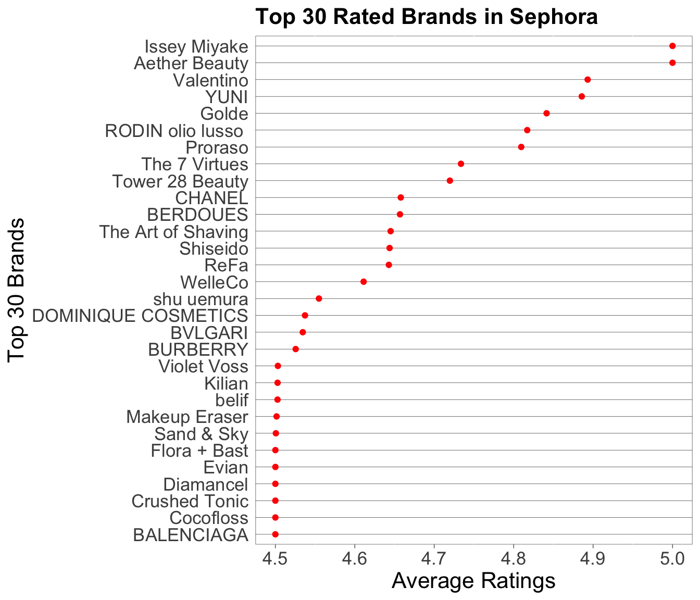
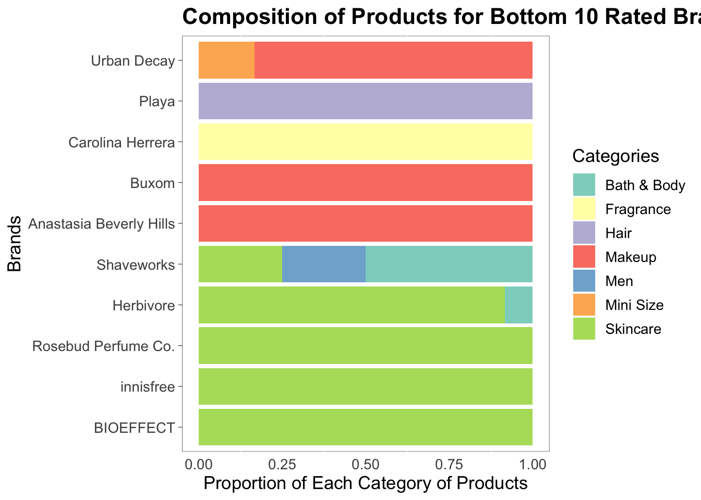

Chapter 5 Results
Our focus in this project would be to investigate the factors that contribute to good ratings of a brand, which will be represented by the average ratings of its products. Given our data, we believe two major components will influence the ratings of a brand: its popularity and the composition of its products. Again, we will use total number of reviews and Loves for each brand, i.e., the sum of these statistics of all the brand’s products.
We suspect that low popularity could result in bias in ratings caused by extreme ratings, given our metric of performance is average ratings of all products within a brand. However, there exist factors that could influence the popularity of brands, too; for example, brands carrying relatively affordable products could be more popular than brands carrying relatively expensive products as more people could afford cheaper products. Price itself could affect ratings as well: customers might expect expensive products to achieve more than affordable products as they are paying more. Given similar items, more affordable products might have higher ratings. We also suspect that certain categories of products tend to have higher ratings than other categories of products. Therefore, brands with top-selling products which fall in higher-rating categories might have higher ratings than other brands that don’t. We will illustrate these relationships using different graphs and plots.
We will use the average ratings of each products within a brand as a measure of performance for each brand. Below is a list of 30 top-rated brands Sephora carries:
ggplot(brand[1:30,], aes(x = avg_rating, y = fct_reorder(Brands, avg_rating))) +
geom_point(color = "red") +
ylab("Top 30 Brands") +
xlab("Average Ratings") +
ggtitle("Top 30 Rated Brands in Sephora") +
theme(text = element_text(size = 13),
plot.title = element_text(size = 16, face = "bold"),
axis.text.y = element_text(size = 13),
axis.text.x = element_text(size = 13),
axis.ticks.y = element_blank(),
axis.title.x = element_text(size = 16),
axis.title.y = element_text(size = 16),
panel.grid.major.x = element_blank(),
panel.grid.major.y = element_line(size = 0.1, color = "black"),
panel.background = element_rect(fill = "transparent", color = "black", size = 0.2),
axis.ticks.x = element_line(size = 0.2)) We will use these brands as examples to analyze the reasons behind high ratings.
5.0.1 Popularity
We believe popularity could be a factor of high ratings. The first thing we wanted to do is to eliminate brands with high ratings but very limited number of products. Brands with very few products could have biased ratings as it is easily influenced by extreme values.
Below is brands with ratings above 4.5 but with less than 4 products.
ggplot(brand_num, aes(x = reorder(Brands, freq), y = freq)) +
geom_col(fill = "#D55E00") +
labs(x = "Brands", y = "Number of Products") +
theme(text = element_text(size = 13),
plot.title = element_text(size = 16, face = "bold"),
panel.background = element_rect(fill = "transparent",
colour = "black", size = 0.2),
panel.grid.major.y = element_blank(),
panel.grid.major.x = element_blank(),
axis.ticks.x = element_blank(),
axis.ticks.y = element_line(size = 0.2)) +
ggtitle("Brands with Average Ratings above 4.5 and \nwith Less than 4 Products") +
coord_flip()Refer back to the list of top 30 rated brands, “Issey Miyake” only has one product listed on Sephora, meaning the ratings of this product will be the ratings for the brand. We could rule the reason of top ratings for “Issey Miyake” is that it has too few samples of products for us to evaluate the performance of the brand as a whole. The same argument could go for brand “Sand and Sky”, too.
Now, could we get the same results with brands with more products? Since the maximum number of products a brand could have 12, it doesn’t make sense to simly use number of products to judge if a brand has enough information(but we could use number of products to see if a brand doesn’t have enough information).
Therefore, we turn to number of total reviews and total Loves as a measure of popularity: do most popular brands have highest ratings of all?
m <- list(l = 50, r = 50, b = 100, t = 100, pad = 4)
t <- list(size = 13)
plot_ly(brand[1:30,], x = ~sum_review, y = ~avg_rating, color = I("#0072B2"), text = ~Brands, hoverinfo = 'text') %>%
add_markers() %>%
layout(title="Top 30 Average Rated Brands in Sephora v.s. Total Number of Product Reviews", font = t, margin = m, xaxis = list(title = 'Total Number of Product Reviews'), yaxis = list(title = 'Average Ratings'))It is also obvious that there is no brand that has high ratings and high number of reviews. All best rated brands, say ratings above 4.8, have very few reviews around or below 500. We could say with some confidence that popularity, or in this case, non-popularity could be a reason for high ratings.
m <- list(l = 50, r = 50, b = 100, t = 100, pad = 4)
t <- list(size = 13)
plot_ly(brand[1:30,], x = ~sum_love/1000, y = ~avg_rating, color = I("#009E73"), text = ~Brands, hoverinfo = 'text') %>%
add_markers() %>%
layout(title = "Top 30 Average Rated Brands in Sephora v.s. Total Number of Product Loves", font = t, margin = m, xaxis = list(title = 'Total Number of Product Loves in Thousands'), yaxis = list(title = 'Average Ratings'))We could use brands with highest popularies, or with highest number of reviews and Loves, as a ceiling to other brands: if a brand could have a good amount of reviews and loves, but could also have a rating close to 5, breaking the ceiling, then the brand must be truly amazing.
Here is a parallel coordinate graph with all brands, including their ratings, total number of reivews, and total number of loves.
brand1 <- brand
coln <- c("Brands", "Average Price", "Number of Products", "Ratings", "Total Number of Reviews", "Total Number of Loves")
colnames(brand1) <- coln
brand1 %>% filter(Ratings!=0) %>% dplyr::select("Ratings", "Total Number of Reviews", "Total Number of Loves") %>%
parcoords::parcoords(rownames = F, brushMode = "1D-axes", reorderable = T, queue = T, alpha = 0.2, width = 800)The biggest take away here: most popular brands are never the best rated ones:)
5.1 Price
Price could influence brands’ ratings in two ways: first, brands with expensive products could be less popular because fewer people could afford it which in turn affect the ratings; second, customers might expect better performance for high-priced products than for cheaper products given similar items.
Below is a histogram of prices on all products in our data set.
ggplot(sephora, aes(x = Prices)) +
geom_histogram(binwidth = 10, center = 25, color = '#7B7B7B', fill = '#F0E442') +
ggtitle("Price Distribution for All Products") + ylab("Count") + xlab("Prices(USD$)") +
theme(text = element_text(size = 13),
plot.title = element_text(size = 16, face = "bold"),
panel.background = element_rect(fill = "transparent",
colour = "black", size = 0.2),
panel.grid.major.y = element_line(size = 0.1, color = "black"),
panel.grid.major.x = element_line(size = 0.1, color = "black"),
axis.ticks.y = element_blank(),
axis.ticks.x = element_line(size = 0.2))
Products have a huge range of prices, with the lowest being $1, and highest being $229. More than half of the products are priced between $70 and $160. This is a surprising result as we expected the distribution to be right skewed and more cheap products in the data.
So, does price affect popularity and ratings of brands?
We first investigate the relationship between price and popularity. We will use average price of all products within a brand as measure of affordability, and again total number of reviews as measure of popularity.
plot_ly(brand[1:30, ], x = ~avg_price, y = ~sum_review, color = '#ff000050', text = ~Brands, hoverinfo = 'text') %>%
add_markers() %>%
layout(title="Top 30 Rated Brands: Total Number of Reviews v.s. Average Prices",
xaxis = list(title = 'Brand Average Price'),
yaxis = list(title = 'Total Number of Reviews'))We choose not to use number of Love as an indicator of popularity in this part of analysis because it is more convincing if the customer have accepted the price and bought the product whereas writing a review confirms the action of purchasing the item. Putting the product in Love list might not be as persuasive as buying the product since it is just one click to “Love” the product.
Now the question remain, will price and ratings have a stronger correlation?
plot_ly(brand[1:30, ], x = ~avg_price, y = ~avg_rating, color = I('#D55E00'), text = ~Brands, hoverinfo = 'text') %>%
add_markers() %>%
layout(title="Top 30 Rated Brands: Ratings v.s. Average Prices",
xaxis = list(title = 'Brand Average Price'),
yaxis = list(title = 'Ratings'))We want to look more closely at the price distribution of top-rated brands: it might happen that top-rated brands share a similar pattern regarding price distribution. So we draw the price distribution of products from top 10 rated brands.
sephora_top10 <- sephora[with(sephora, order(-avg_rating)), ][1:53, ]
ggplot(sephora_top10, aes(x = reorder(Brands, Prices, median), y = Prices)) +
geom_boxplot(fill = "#CC79A7", color = "#473e2c") +
ggtitle("Top 10 Rated Brand v.s. Price Distribution") +
labs(x = "Brands", y = "Price Distribution") +
theme(text = element_text(size = 13),
plot.title = element_text(size = 16, face = "bold"),
axis.text.x = element_text( color = "#993333", size = 13),
panel.background = element_rect(fill = "transparent",
colour = "black", size = 0.2),
panel.grid.major.x = element_blank(),
panel.grid.major.y = element_line(size = 0.1, color = "black"),
axis.ticks.x = element_blank(),
axis.ticks.y = element_line(size = 0.2)) +
coord_flip()
The distributions are quite difference from one and another and they don’t share any common patterns. It is interesting to see that price might not be an important factor to consider any more for customers nowadays to decided whether or not to purchase a product.
At this point, we want to rule out price as a primary factor that could affect the ratings of brands.
5.2 Composition of Products
As explained before, we want to know if certain categories of products would naturally have higher ratings than other categories of products, thus brands with top-selling products containing higher-rated categories of products will then have higher ratings in total. To clarify, the composition of products we defined here means out of the top-selling products we acquired for each brand, how many products come from each category respectively.
ggplot(cat_data, aes(avg_rating, fct_reorder(Categories, avg_rating))) +
geom_point(colour = "blue") + xlab("Average Ratings") + ylab("Categories of Products") +
ggtitle("Average Ratings for Each Category of Products") +
theme_grey(16) +
theme(text = element_text(size = 13),
plot.title = element_text(size = 16, face = "bold"),
panel.background = element_rect(fill = "transparent", colour = "black", size = 0.2),
panel.grid.major.y = element_line(size = 0.1, color = "black"),
panel.grid.major.x = element_blank(),
axis.ticks.y = element_blank(),
axis.ticks.x = element_line(size = 0.2))Out of all observations, “Men” products appears to have highest ratings whereas “Bath & Body” appears to have lowest ratings among all categories. However, we also need to account for volumns of products in each category:
ggplot(cat_data, aes(x = reorder(Categories, sum_review), y = sum_review/1000)) +
geom_col(fill = "lightblue") +
labs(x = "Categories of Products", y = "Sum of Reviews in Thousands") + ggtitle("Total Number of Review for Each Category") +
coord_flip() +
theme(text = element_text(size = 13),
plot.title = element_text(size = 16, face = "bold"),
panel.background = element_rect(fill = "transparent",
colour = "black", size = 0.2),
panel.grid.major.x = element_line(size = 0.1, color = "black"),
panel.grid.major.y = element_blank(),
axis.ticks.y = element_blank(),
axis.ticks.x = element_line(size = 0.2))Since we are calculating average ratings, we need to know how many reviews there are for each category of products. Even though “Men” is best-rated among all categories, it has substantially fewer number of reviews than “Makeup”, “Skincare”, and “Fragrance”. Therefore, it might be trivial to consider “Men” as the best-selling type of product as it contains a lot less data points than the most reviewed categories.
It might be wise to consider the three most reviewed categories for our analysis, which are “Makeup”, “Skincare”, and “Fragrance”. However, they have quite different ratings: “Fragrance” has the highest among the three, and “Makeup” the lowest.
Now let’s compare the compostion of productions for top 10 rated brands and bottom 10 rated brands.
highest_10 = cosmetics[cosmetics$Brands %in% high_brands[0:10],]
highest_10_df=highest_10 %>%
group_by(Brands, Categories) %>%
summarize(freq=n())%>%filter() %>%
mutate(prop=freq/sum(freq))
ggplot(highest_10_df, aes(fill = Categories, y = prop, x = Brands)) +
geom_bar(position = "fill", stat = "identity") +
scale_fill_brewer(palette="Pastel1")+
theme(text = element_text(size = 13),
plot.title = element_text(size = 16, face = "bold"),
panel.background = element_rect(fill = "transparent",
colour = "black", size = 0.2),
panel.grid.major.x = element_blank(),
panel.grid.major.y = element_blank(),
axis.ticks.x = element_blank(),
axis.ticks.y = element_line(size = 0.2)) +
ggtitle("Composition of Products for Top 10 Rated Brands") +
labs(x = "Brands", y = "Proportion of Each Category of Products") +
coord_flip()
Out of the top 10 rated brands, four of them only sell “Fragrance”, whereas one for “Skincare” and one for “Makeup”. Composition of products might actually influence the ratings of brands: since “Fragrance” has a higher rating in general, it could be that brands which only sell perfumes, or mostly sell perfumes can end up with a higher ratings.
lowest_10 = cosmetics[cosmetics$Brands %in% high_brands[46:55],]
lowest_10_df = lowest_10 %>% group_by(Brands, Categories) %>%
summarize(freq=n()) %>%
filter() %>%
mutate(prop=freq/sum(freq))
ggplot(lowest_10_df, aes(fill = Categories, y = prop, x = Brands)) +
geom_bar(position = "fill", stat = "identity") +
scale_fill_brewer(palette="Set3")+
theme(text = element_text(size = 13),
plot.title = element_text(size = 16, face = "bold"),
panel.background = element_rect(fill = "transparent",
colour = "black", size = 0.2),
panel.grid.major.x = element_blank(),
panel.grid.major.y = element_blank(),
axis.ticks.x = element_blank(),
axis.ticks.y = element_line(size = 0.2)) +
ggtitle("Composition of Products for Bottom 10 Rated Brands") +
labs(x = "Brands", y = "Proportion of Each Category of Products") +
coord_flip()
Out of the bottom 10 rated brands, three of them only sell “Skincare”, whereas two for “Makeup” and one for “Fragrance”. Although “Skincare” doesn’t have the lowest rating among the three, 30% of lowest rating brands only sell “Skincare”. Also, highest-rated category “Fragrance” among the three does have lowest number of brands only selling perfumes.
We could make some assumption between composition of products of a brand and its ratings: a brand that sell highest rating categories of products tend to be have higher ratings.
In conclusion, although not very strongly, popularities of a brand and composition of products could potentially influence the ratings of the brand on Sephora. Price might not be an as important as a factor we consider it to be when accessing the performance of a brand.